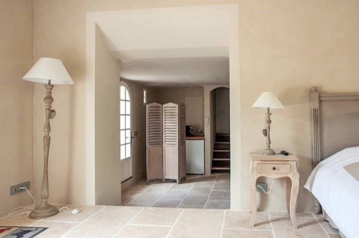
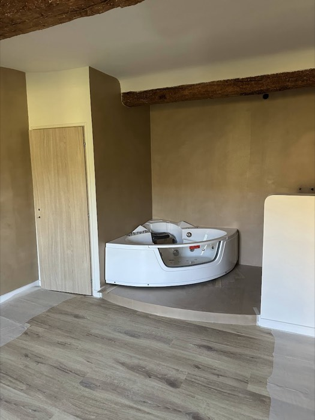
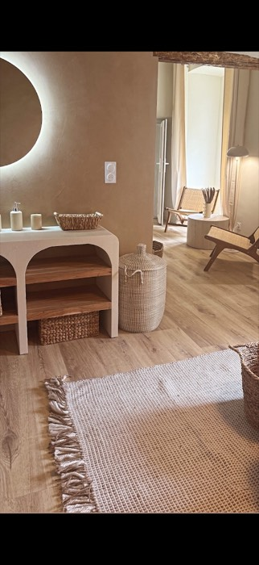
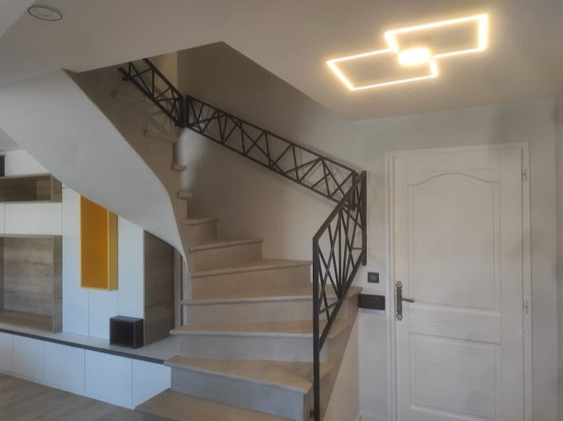

Des matières minérales, douces au toucher et sans joint, pour un intérieur intemporel.
Le béton ciré et les enduits à la chaux apportent cette profondeur de matière qui caractérise les intérieurs contemporains et les maisons de caractère. Appliqués à la main, ils créent des surfaces continues, nuancées et uniques.
Nous les réalisons sur les murs, les sols, les douches à l'italienne, les meubles vasques maçonnés et jusqu'aux escaliers, avec une attention particulière à la préparation des supports et à la protection finale.
Cliquez sur une photo pour l'agrandir.

Résultat
Résultat Résultat
Résultat Résultat
Résultat
Résultat
Résultat